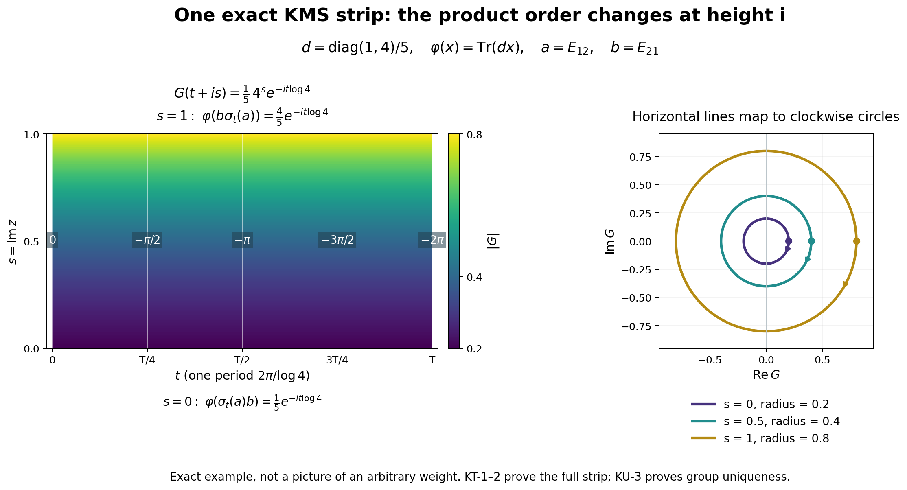

General uniqueness retains weight invariance; only the separately proved faithful finite-state case derives invariance from KMS.
Uniqueness of the modular group from the finite-star KMS condition
CC0-1.0 to the extent of rights held.
Let \(\varphi\) be a faithful normal semifinite weight on an arbitrary von Neumann algebra \(M\). Suppose \((\alpha_t)_{t\in\mathbb R}\) is a group of normal *-automorphisms, pointwise ultraweakly continuous, preserving \(\varphi\) on \(M_+\). Assume the following KMS condition on the entire algebra \(A=\mathfrak n_\varphi\cap\mathfrak n_\varphi^*\): for every \(a,b\in A\) there is a bounded continuous function on \(0\leq\operatorname{Im}z\leq1\), holomorphic inside, with boundary values \[ K^\alpha_{a,b}(t)=\varphi_0(\alpha_t(a)b),\qquad K^\alpha_{a,b}(t+i)=\varphi_0(b\alpha_t(a)). \tag{KU1} \] We prove \(\alpha_t=\sigma_t^\varphi\) for every real \(t\). For a faithful normal state, invariance follows from (KU1), as proved in KU-4; it need not be separately assumed in that case.
Actual inputs are GW-1–5, WR-1–4, MW-4, EW-2–3 with the required normality hypothesis, CP01–06, SF-3–4, FF-1, and the complete local KT-1–4. The free author context is Hiai, §2.2, printed pp.17–19, and §7.1(C), p.64. The generator is constructed from a Laplace integral of the GNS action. The KMS boundary condition then identifies its exponential form with the full closed GNS involution, determining the modular group.
Actual earlier proof ranges: OA-FLOW.GW.1, OA-FLOW.GW.2, OA-FLOW.GW.3, OA-FLOW.GW.4, OA-FLOW.GW.5, OA-FLOW.WR.1, OA-FLOW.WR.2, OA-FLOW.WR.3, OA-FLOW.WR.4, OA-FLOW.WR.5, OA-FLOW.MW.4, OA-FLOW.NF.5, OA-FLOW.EW.2, OA-FLOW.EW.3, OA-FLOW.EW.5, OA-FLOW.CP.1, OA-FLOW.CP.2, OA-FLOW.CP.3, OA-FLOW.CP.4, OA-FLOW.CP.5, OA-FLOW.CP.6, OA-FLOW.SF.SF0, OA-FLOW.SF.SB0, OA-FLOW.SF.SB1, OA-FLOW.SF.SB2, OA-FLOW.SF.SB3, OA-FLOW.SF.SB4, OA-FLOW.SF.SB5, OA-FLOW.SF.SB6, OA-FLOW.SF.SF3, OA-FLOW.SF.SF4, OA-FLOW.FF.1, OA-FLOW.FF.2, OA-FLOW.CF.1, OA-FLOW.CF.6, OA-FLOW.CF.7, OA-FLOW.CF.8, OA-FLOW.SC.4, OA-FLOW.SC.5, OA-FLOW.SC.8, OA-FLOW.SC.9, OA-FLOW.KT.1, OA-FLOW.KT.2, OA-FLOW.KT.3, OA-FLOW.KT.4. The spectral domains, continuous-vector integrals, Gaussian scalar interchange and rectangle/circle complex-analysis arguments are complete in those earlier readers.
KU-1. The implementing group is strongly continuous on the full GNS space
Invariance implies \(\alpha_t(N)=N\), \(\alpha_t(A)=A\), and \[ V_t\Lambda(x)=\Lambda(\alpha_t(x))\qquad(x\in N) \tag{KU2} \] defines a unitary group on the GNS completion. It implements \(\alpha_t\): \[ V_t\pi(a)V_{-t}=\pi(\alpha_t(a))\qquad(a\in M). \tag{KU3} \] Indeed both sides applied to \(\Lambda(x)\) give \(\Lambda(\alpha_t(a)x)\). The GNS range is dense, so this proves the operator identity.
Pointwise ultraweak continuity of \(\alpha_t\) does not by itself allow application of the unbounded map \(\Lambda\). Here is the required independent continuity argument. WR-1–2 supplies vectors \(\eta_j\) with bounded right multipliers \(R_{\eta_j}\), where \[ R_{\eta_j}\Lambda(x)=\pi(x)\eta_j\quad(x\in N),\qquad R_{\eta_j}\to I\text{ strongly}, \] and the \(R_{\eta_j}\) are positive contractions. For every \(x\in N\) and \(v\in H_\varphi\), \[ \langle V_t\Lambda(x),R_{\eta_j}^*v\rangle =\langle\pi(\alpha_t(x))\eta_j,v\rangle \tag{KU4} \] is continuous in \(t\), because \(\pi\) is normal. The linear span of these test vectors is dense: each \(v\) is the norm limit of \(R_{\eta_j}^*v=R_{\eta_j}v\). Unitary uniform boundedness extends continuity first to every test vector, then from \(\Lambda(N)\) to every initial vector. Thus \(V_t\) is weakly continuous. The identity \[ \|(V_t-V_s)\xi\|^2 =2\|\xi\|^2-2\operatorname{Re}\langle V_{t-s}\xi,\xi\rangle \] makes it strongly continuous, without a spectral theorem for arbitrary unitary groups.
The action \(\alpha_t\) is also pointwise strongly* continuous in a concrete representation. At zero expand \[ (\alpha_t(a)-a)^*(\alpha_t(a)-a) =\alpha_t(a^*a)-\alpha_t(a)^*a-a^*\alpha_t(a)+a^*a. \] Every vector evaluation tends to zero by ultraweak continuity, since multiplication by a fixed bounded operator preserves vector-coefficient continuity. Apply the same argument to \(a^*\), and use the group property at other real parameters.
KU-2. Entire elements for the competing action stay in the finite-star domain
For \(x\in A\), define \[ a_{n,x}(z)=\sqrt{\frac n\pi} \int_{\mathbb R}e^{-n(t-z)^2}\alpha_t(x)\,dt \tag{KU5} \] as the CP ultraweak integral. The operator norm bound, norm-entire dependence, real-translation rule and adjoint rule are exactly the scalar-kernel arguments of KT-3, applied now to the pointwise strongly* continuous action \(\alpha\): \[ \|a_{n,x}(z)\|\leq e^{n(\operatorname{Im}z)^2}\|x\|,\qquad \alpha_s(a_{n,x}(z))=a_{n,x}(z+s),\qquad a_{n,x}(z)^*=a_{n,x^*}(\bar z). \tag{KU6} \] That argument uses only the explicit Gaussian kernel and normality of the maps, not modularity.
KU-1 gives the previously missing continuous GNS integrand. The bounded-graph argument of KT-3, with \(V_t\) replacing \(U_t\), proves \[ a_{n,x}(z)\in A,\qquad \Lambda(a_{n,x}(z)) =\sqrt{\frac n\pi}\int_{\mathbb R}e^{-n(t-z)^2}V_t\Lambda(x)\,dt. \tag{KU7} \] The same assertion for \(x^*\), together with (KU6), proves the star-domain part. Compact Riemann sums stay uniformly bounded in operator norm; their GNS vectors converge in norm; EW-3 identifies their limit. Thus no boundedness of \(\Lambda\) on an operator ball is presumed.
The right side is entire as a Hilbert-valued function: the first two kernel derivatives have an integrable local bound, so the same integral remainder estimate used in KT-3 works in Hilbert norm. Moreover \[ \|\Lambda(a_{n,x}(z))\| \leq e^{n(\operatorname{Im}z)^2}\|\Lambda(x)\|. \tag{KU8} \] At \(z=0\), these vectors converge to \(\Lambda(x)\); their star vectors converge to \(\Lambda(x^*)\), by the Gaussian approximate identity and strong continuity of \(V_t\).
For \(a=a_{n,x}(0)\), use \(\alpha_z(a)=a_{n,x}(z)\) for its entire orbit. This is consistent with complex shifts by (KU6) and the scalar identity theorem. The spaces spanned by \(\Lambda(a)\) and by \(\Lambda(a^*)\), as \(x\in A,n\geq1\) vary, are dense in \(H_\varphi\), since \(\Lambda(A)\) is dense and the preceding limits hold. We need no unproved analytic-vector theorem for a generator of \(V_t\).
KU-3. The implementing generator is determined by the GNS form
We first construct a self-adjoint generator of the strongly continuous group \(V_t\) from KU-1. We then use the KMS boundary condition to identify its positive exponential with the closed GNS form. This determines the group on the whole Hilbert space.
A resolvent constructed from the real orbit. Define \[ R\xi=\int_0^\infty e^{-s}V_s\xi\,ds,\qquad C=I-2R . \tag{KU9} \] The integral is the continuous-vector integral of SF-3; its tails have norm at most \(e^{-T}\|\xi\|\). Thus \(R\) is bounded with \(\|R\|\leq1\), and its adjoint is the same integral with \(V_{-s}\). All the \(V_s\) commute, so \(R\), \(R^*\), and every \(V_t\) commute. Splitting the positive quadrant into \(t\geq s\) and \(s\geq t\) gives \[ R^*R=\int_0^\infty\!\!\int_0^\infty e^{-s-t}V_{t-s}\,dt\,ds =\frac12\int_{\mathbb R}e^{-|u|}V_u\,du =\frac12(R+R^*). \] These equalities may be tested against two Hilbert vectors: on compact rectangles they follow from Riemann sums and scalar change of variables, and the remaining tails are bounded by the scalar integral of \(e^{-s-t}\|\xi\|\|\eta\|\). Hence \(C^*C=CC^*=I\).
For real \(t\), substitution in the integral gives \[ V_tR\xi=e^t\int_t^\infty e^{-u}V_u\xi\,du,\qquad \frac{d}{dt}V_tR\xi=V_t(R-I)\xi . \] The derivative exists in Hilbert norm by SF-3's fundamental theorem. If \(R\xi=0\), the left side is identically zero and its derivative at zero gives \(\xi=0\). Normality of \(R\) implies \(\ker R^*=\ker R=0\), so \(\operatorname{Ran}R\) is dense.
Define the linear operator \[ D(B)=\operatorname{Ran}R,\qquad B=i(R^{-1}-I). \tag{KU10} \] It is closed, since the inverse of the bounded injective operator \(R\) has a closed graph. The identity \(R+R^*=2R^*R\), tested on \(\xi,\eta\), gives \(\langle BR\xi,R\eta\rangle=\langle R\xi,BR\eta\rangle\); thus \(B\) is symmetric. Moreover \[ (B+i)R=iI,\qquad (B-i)R=iC . \] Both \(B+i\) and \(B-i\) are onto. This also proves self-adjointness directly: if \(y\in D(B^*)\), choose \(x\in D(B)\) with \((B+i)x=(B^*+i)y\). Then \(y-x\) belongs to \(\ker(B^*+i)=\operatorname{Ran}(B-i)^\perp=\{0\}\). Consequently \(D(B^*)=D(B)\).
The spectral theorem with full domains in SB-4 now applies to this self-adjoint operator. The commutation \(V_tR=RV_t\) preserves \(D(B)\) and commutes with \(B\) there, while the derivative above becomes \[ \frac{d}{dt}V_t\xi=iBV_t\xi\qquad(\xi\in D(B)). \] For such \(\xi\), spectral dominated convergence gives the norm derivative of \(e^{-itB}\xi\), using \(\left|(e^{ihq}-1)/h\right|\leq |q|\). The product rule therefore gives \(\frac{d}{dt}(e^{-itB}V_t\xi)=0\). The vector fundamental theorem, followed by density of \(D(B)\), proves \[ V_t=e^{itB}\qquad(t\in\mathbb R). \tag{KU11} \]
The KMS condition identifies the positive form. Let \(\mathcal C\) be the linear span of the vectors \(\Lambda(a_{n,x}(0))\), where \(x\in A\) and \(n\geq1\) as in KU-2. Every corresponding element \(a\) has an entire orbit in both the algebra and the GNS space. With the spectral calculus of \(B\), the Gaussian integral in KU7 gives \[ \Lambda(a_{n,x}(z)) =\left[q\longmapsto e^{-q^2/(4n)}e^{izq}\right](B)\Lambda(x). \] To justify the formula, first apply \(1_{[-k,k]}(B)\), use the scalar Gaussian transform from FF-1 on that compact spectral interval, and then let \(k\to\infty\). The displayed multiplier is bounded on the whole real line. The same argument after multiplication by \(e^{rq}\), for any real \(r\), proves all the required exponential domains. In particular, for every such \(a\), including finite sums, \[ \Lambda(\alpha_{-i}(a))=e^B\Lambda(a). \]
The entire scalar function \(h(z)=\varphi_0(a^*\alpha_z(a)) =\langle\Lambda(\alpha_z(a)),\Lambda(a)\rangle\) agrees on the real edge with \(K^\alpha_{a,a^*}(z+i)\). The zero-edge uniqueness proved in KT-1 identifies these two functions on the closed lower strip. At its other edge, \[ \|e^{B/2}\Lambda(a)\|^2 =\langle e^B\Lambda(a),\Lambda(a)\rangle =h(-i) =\varphi_0(aa^*) =\|S\Lambda(a)\|^2 . \tag{KU12} \] All products are in the finite algebra: \(a\) and every \(\alpha_z(a)\) belong to \(A\). The first equality uses the actual spectral domains just proved.
Put \(P=e^{B/2}\), a positive self-adjoint operator. The subspace \(\mathcal C\) is a graph core for both \(S\) and \(P\). For \(S\), KU-2 approximates each \(\Lambda(x)\), \(x\in A\), together with \(\Lambda(x^*)\), and WR-3 identifies the closure of this initial involution with \(S\). For \(P\), put \(g_n(q)=e^{-q^2/(4n)}\). If \(\xi\in D(P)\), spectral dominated convergence gives \(g_n(B)\xi\to\xi\) in the \(P\)-graph norm. For fixed \(n\), approximate \(\xi\) in Hilbert norm by \(\Lambda(x_j)\), \(x_j\in A\). Both \(g_n(B)\) and \(Pg_n(B)\) are bounded, so \(g_n(B)\Lambda(x_j)=\Lambda(a_{n,x_j}(0))\) approximates \(g_n(B)\xi\) in that graph norm.
Equation KU12 makes the two graph norms identical on \(\mathcal C\). Completing this same core in these norms and using closedness of \(S\) and \(P\) gives \[ D(P)=D(S),\qquad \langle P\xi,P\eta\rangle=\langle S\eta,S\xi\rangle \quad(\xi,\eta\in D(S)). \tag{KU13} \] The second equality follows by polarization, with the reversed order on the conjugate-linear side. This identifies the associated operators including their domains: \(\xi\in D(P)\) lies in \(D(P^2)\) exactly when the form \(\eta\mapsto\langle P\xi,P\eta\rangle\) is represented by \(\langle v,\eta\rangle\) for some \(v\in H_\varphi\). By the adjoint definition and KU13, this is exactly the condition \(\xi\in D(S^*S)\), with the same vector \(v\). Therefore \(e^B=P^2=S^*S=\Delta\).
Finally the spectral measure of \(e^B\) is the pushforward of that of \(B\) under \(q\mapsto e^q\). This map is one-to-one from \(\mathbb R\) onto \((0,\infty)\); SB-4's uniqueness and full Borel domain rules give \(\log(e^B)=B\). Thus \(B=\log\Delta\). Combining KU11, KU3, the modular implementation in MW-4, and faithfulness of the GNS representation yields \[ V_t=\Delta^{it},\qquad \alpha_t=\sigma_t^\varphi\qquad(t\in\mathbb R). \tag{KU14} \] The argument uses neither a cyclic finite-weight identity vector nor any separability assumption.
KU-4. For a faithful normal state, KMS alone forces invariance
Let \(\omega\) be a faithful normal state satisfying (KU1) for a pointwise ultraweakly continuous normal automorphism group, without assuming invariance. Here \(A=M\), so take \(b=1\). The two boundary values of \(K^\alpha_{a,1}\) are the same scalar function \(t\mapsto\omega(\alpha_t(a))\).
Translate this closed-strip function vertically by integer multiples of \(i\), identifying its equal values on the seams. This defines a continuous bounded function \(H\) on \(\mathbb C\), holomorphic away from the horizontal integer lines. It is holomorphic across each seam as well: for a small rectangle crossing just one seam, cut at distance \(\varepsilon\) on either side. The two rectangle integrals vanish by SF-4's Cauchy theorem; the intervening parallel-edge integrals cancel in the limit by continuity, and the short joining edges tend to zero. Thus the full rectangle integral is zero. The local rectangular Morera criterion makes \(H\) holomorphic across the seam.
SF-4's circle Cauchy estimate bounds the derivative at each center by the global bound divided by any radius. Letting the radius tend to infinity makes \(H\) constant. In particular \(\omega(\alpha_t(a))=\omega(a)\) for every \(a\in M\). KU-1–3 then apply and give \(\alpha_t=\sigma_t^\omega\). The argument also works for a nonzero faithful finite normal positive functional after rescaling.
The arbitrary-weight theorem above includes weight invariance among its hypotheses, exactly as stated at the start. Nothing in this proof drops faithfulness, identifies a natural cone, or asserts an operator-valued weight theorem. Those are separate obligations.
KU-5. An exact KMS strip in two matrix dimensions

This image illustrates KT-1, equations KT1–KT4 and KT-2, equations KT5–KT7. The uniqueness argument uses the generator and common closed-form domain identified in KU-3, equations KU9–KU14; the image itself does not prove uniqueness. The reproducible plotting source and exact numerical parameters accompany it.
Let \(M=M_2(\mathbb C)\), \(d=\operatorname{diag}(1,4)/5\), and \(\varphi(x)=\operatorname{Tr}(dx)\). Its GNS space can be represented as \(M_2(\mathbb C)\) with inner product \(\langle X,Y\rangle=\operatorname{Tr}(Y^*X)\), left multiplication representation, and \(\Lambda(x)=xd^{1/2}\). The full involution and its polar factors are \[ S(X)=d^{-1/2}X^*d^{1/2},\qquad J(X)=X^*,\qquad \Delta^{1/2}(X)=d^{1/2}Xd^{-1/2}. \] Indeed \(S\Lambda(x)=\Lambda(x^*)\), and \(J\Delta^{1/2}=S\). In the orthonormal matrix-unit basis the displayed \(\Delta^{1/2}\) is positive, with positive diagonal eigenvalues \(\sqrt{d_i/d_j}\), while \(J\) is antiunitary. Thus these are the actual polar factors. Consequently \[ \Delta^{it}(X)=d^{it}Xd^{-it},\qquad \sigma_t(x)=d^{it}xd^{-it}. \] Take \(a=E_{12}\), \(b=E_{21}\), and \(q=\log4\). Then \[ \sigma_z(a)=4^{-iz}E_{12},\qquad G(z)=\varphi(\sigma_z(a)b)=\frac15\,4^{-iz}. \] These are entire functions in this finite-dimensional example. For \(z=t+is\), \[ G(t+is)=\frac15\,4^s e^{-it\log4},\qquad |G(t+is)|=\left(\frac15\right)^{1-s} \left(\frac45\right)^s. \] At the two edges, \[ G(t)=\varphi(\sigma_t(a)b)=\frac15e^{-it\log4},\qquad G(t+i)=\varphi(b\sigma_t(a))=\frac45e^{-it\log4}. \] Thus the two product orders and the plus-\(i\) shift agree exactly with KT6. The interpolation bound is attained throughout this strip; it is not merely a numerical fit.
The left panel shows \(0\leq t\leq T=2\pi/\log4\) and \(0\leq s\leq1\). Colors encode the exact modulus. White labels give the continuous unwrapped phase \(-t\log4\), which is allowed to pass below \(-\pi\); they are not labels for a principal argument. The right panel maps each horizontal line at \(s=0,\frac12,1\) to the complex coefficient plane. Their respective radii are \(\frac15,\frac25,\frac45\), and increasing \(t\) moves clockwise. The dots mark \(t=0\).
All coordinates, constants, signs and identities here are proved by the displayed matrix calculation. For free author context on the KMS strip see Hiai, §2.2, printed pp.17–19. This independent example, figure and reproducible source are CC0-1.0 to the extent of rights held.